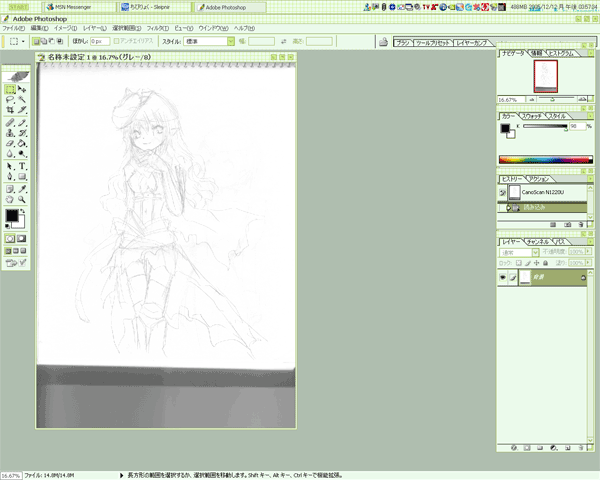
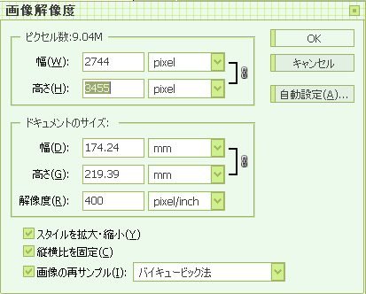
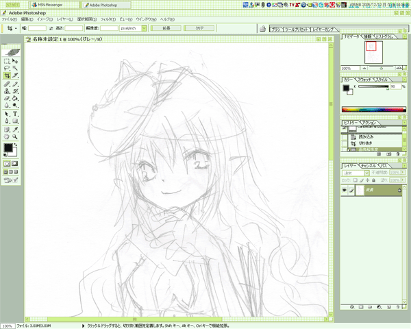

まず、下書きというかクロッキー帳にかいた落書きを取り込みます。

解像度はお好みで。
今回は確か400dpiだったかな。
わたしはだいたい400前後です。
取り込みするときのモードは、グレースケール。
ただ単に、軽いから、という理由で。
取り込み完了しましたが、このままじゃあまりにも大きいので、少し小さくします。

高さを2000pxくらいに。
幅は勝手に縮小されるので放置です。
いっぺん小さくしてみて、塗りやすそうな大きさにしてみることをオススメします。

だいたいこれくらいが自分的塗りやすいサイズー。
大きさ変更終わり。
モードがグレースケールのままなので、RGBに直します。
これで名前つけて保存。
次からペインターで作業です。
前へ-次へ